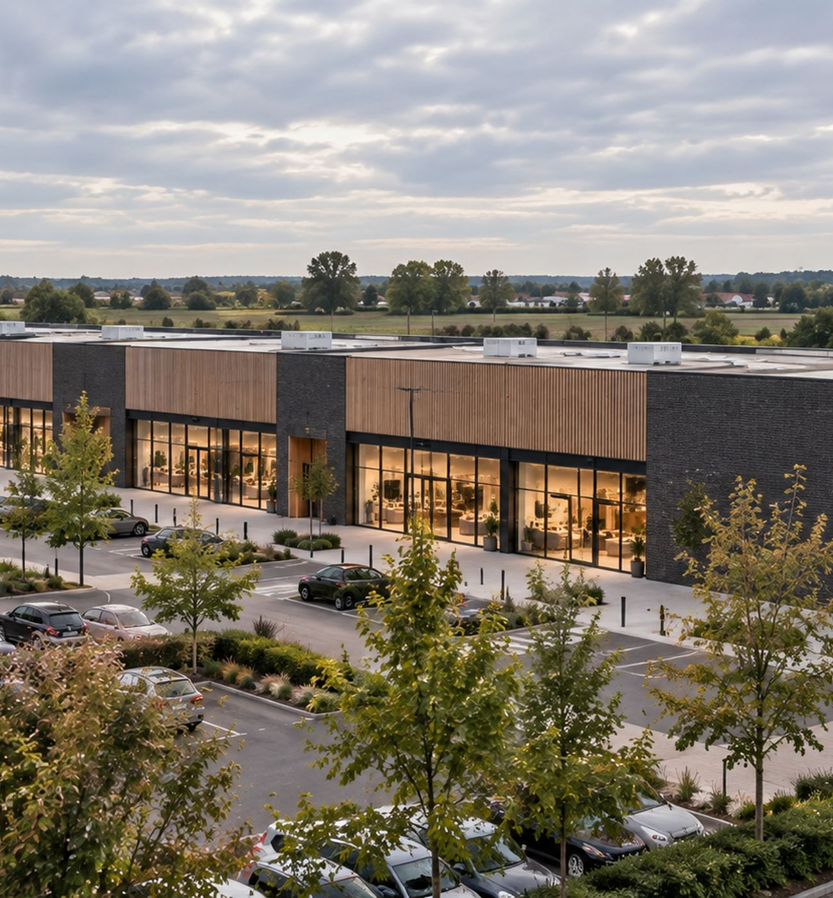
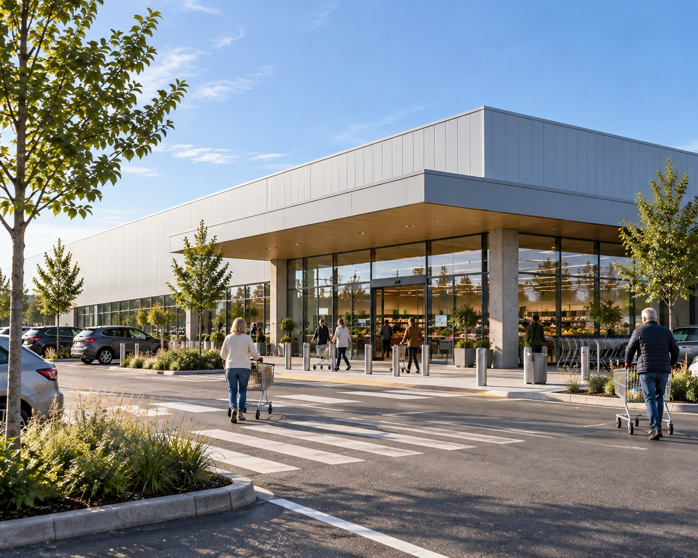
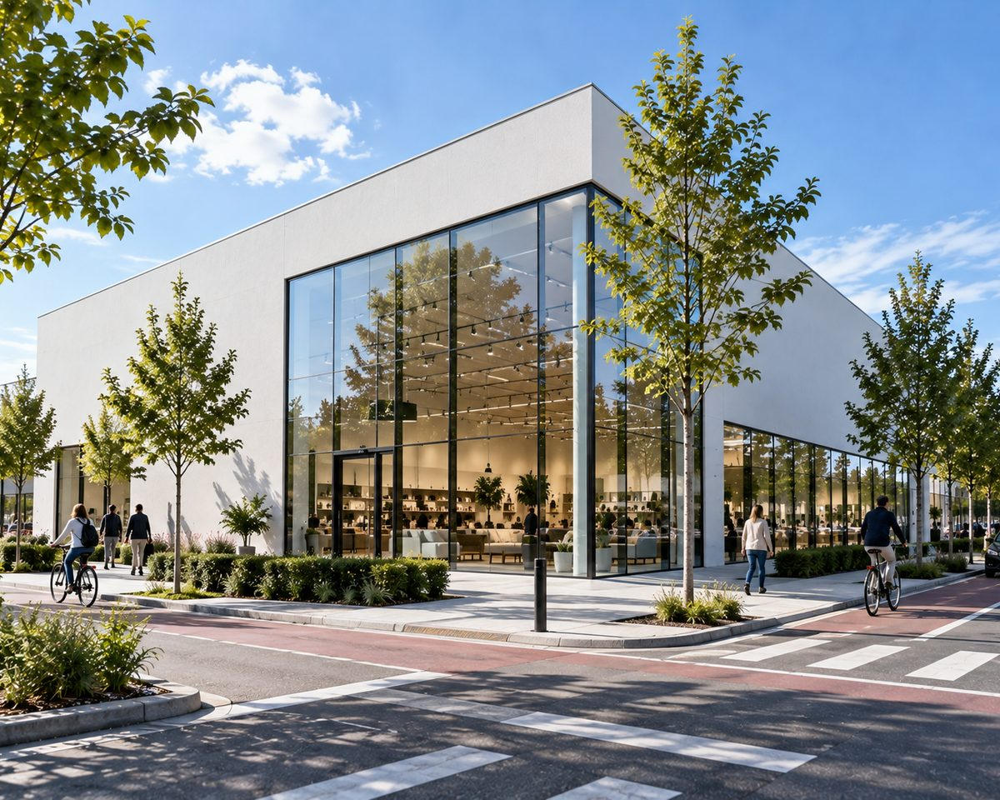
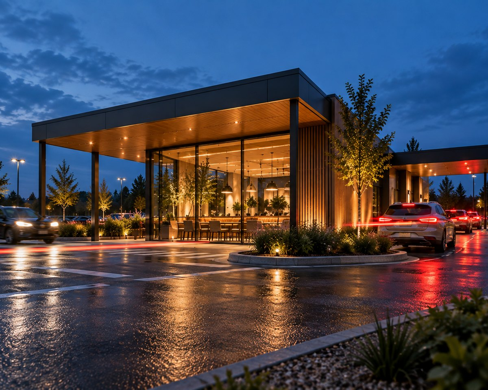

02
Commercial real estate
Sterke locaties.
Blijvende waarde.
Blackoak investeert in commercieel vastgoed met sterke gebruikers en een langetermijnperspectief.
Vastgoed.
Voor generaties.

Prime locations.
Real impact.
Merken verbonden aan onze
commerciële vastgoedportefeuille.
Onze focus
Meer dan
vierkante meters.
Wij investeren in commercieel vastgoed op strategische locaties, in samenwerking met sterke gebruikers en met oog voor duurzame waardecreatie.
Strategische
locaties
Zichtbaar, bereikbaar, verankerd.
Sterke
gebruikers
Gevestigde merken met een stevige basis.
Stabiele
cashflows
Voorspelbare inkomsten op lange termijn.
Langetermijn-
perspectief
Wij denken in decennia, niet in kwartalen.

Type activa
Essentiële locaties
in het dagelijkse leven.
Onze commerciële vastgoedportefeuille bestaat uit kwalitatieve retail- en convenience locaties, verankerd in lokale gemeenschappen.

Supermarkten als dagelijkse ankerpunten in de buurt.

Mode en huishoudelijke winkels met sterke merken.

Horeca op knooppunten met hoge zichtbaarheid.
Een locatie met potentie?
Laten we praten.
Wij zijn steeds geïnteresseerd in gronden, gebouwen en vastgoedopportuniteiten in België.
Locaties.
Merken.
Samen.
Langdurige waarde.